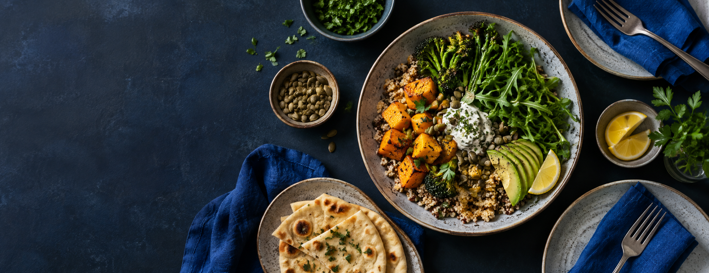

Ask ChatGPT
Copy a tidy summary of your preferences, library and current week, then paste it into our chat.

Meal library for two
Plan the week. Rediscover old favourites. Keep the awkward ingredients in the background.
Weekly plan
Built from your plan
Your reliable choices
A nudge, not a roulette wheel
Portable by design
Copy a tidy summary of your preferences, library and current week, then paste it into our chat.
Your changes stay in this browser. Export a JSON backup whenever you add meals or mark one cooked.
Import a previous backup. It replaces the meal data currently saved in this browser.